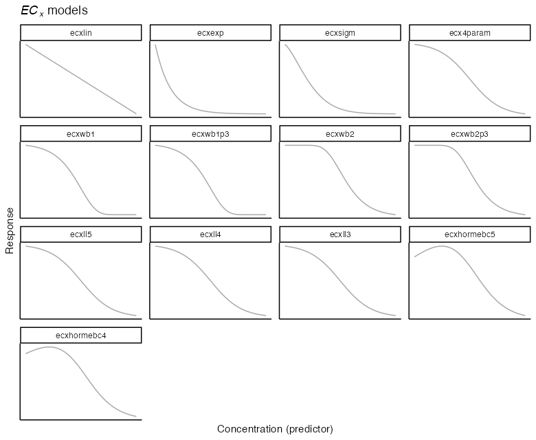
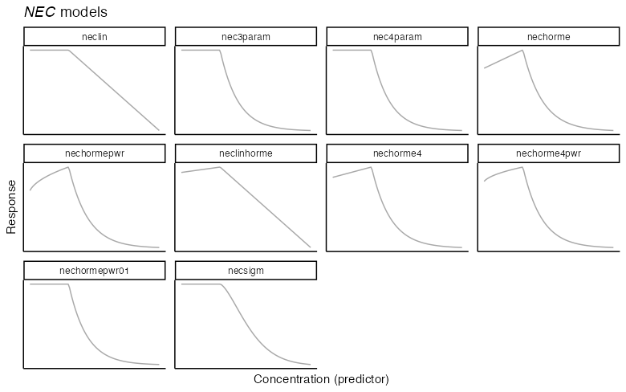

vignettes/example2b.Rmd
example2b.Rmdbayesnec
There are a range of models available in bayesnec and the working bnec function supports individual model fitting, as well as multi-model fitting with Bayesian model averaging.
The argument model in a bayesnecformula is a character string indicating the name(s) of the desired model (see ?models for more details, and the list of models available). If a recognised model name is provided, a single model of the specified type is fit, and bnec returns a model object of class bayesnecfit. If a vector of two or more of the available models are supplied, bnec returns a model object of class bayesmanecfit containing Bayesian model averaged predictions for the supplied models, providing they were successfully fitted.
Model averaging is achieved through a weighted sample of each fitted models’ posterior predictions, with weights derived using the loo_model_weights function from loo (???; ???). Individual brms model fits can be extracted from the mod_fits element and can be examined individually.
The model may also be one of "all", meaning all of the available models will be fit; "ecx" meaning only models excluding the \(\eta = \text{NEC}\) step parameter will be fit; "nec" meaning only models with a specific \(\eta = \text{NEC}\) step parameter will be fit; "bot_free" meaning only models without a "bot" parameter (without a bottom plateau) will be fit; "zero_bounded" are models that are bounded to be zero; or "decline" excludes all hormesis models, i.e., only allows a strict decline in response across the whole predictor range (see below Parameter definitions). There are a range of other pre-defined model groups available. The full list of currently implemented model groups can be seen using:
library(bayesnec)
models()
#> $nec
#> [1] "nec3param" "nec4param" "nechorme" "nechorme4" "necsigm" "neclin" "neclinhorme" "nechormepwr"
#> [9] "nechorme4pwr" "nechormepwr01"
#>
#> $ecx
#> [1] "ecx4param" "ecxlin" "ecxexp" "ecxsigm" "ecxwb1" "ecxwb2" "ecxwb1p3" "ecxwb2p3" "ecxll5"
#> [10] "ecxll4" "ecxll3" "ecxhormebc4" "ecxhormebc5"
#>
#> $all
#> [1] "nec3param" "nec4param" "nechorme" "nechorme4" "necsigm" "neclin" "neclinhorme" "nechormepwr"
#> [9] "nechorme4pwr" "nechormepwr01" "ecxlin" "ecxexp" "ecxsigm" "ecx4param" "ecxwb1" "ecxwb2"
#> [17] "ecxwb1p3" "ecxwb2p3" "ecxll5" "ecxll4" "ecxll3" "ecxhormebc4" "ecxhormebc5"
#>
#> $bot_free
#> [1] "nec3param" "nechorme" "necsigm" "neclin" "neclinhorme" "nechormepwr" "ecxlin" "ecxexp"
#> [9] "ecxsigm" "ecxwb1p3" "ecxwb2p3" "ecxll3" "ecxhormebc4" "nechormepwr01"
#>
#> $zero_bounded
#> [1] "nec3param" "nechorme" "necsigm" "nechormepwr" "nechormepwr01" "ecxexp" "ecxsigm" "ecxwb1p3"
#> [9] "ecxwb2p3" "ecxll3" "ecxhormebc4"
#>
#> $decline
#> [1] "nec3param" "nec4param" "necsigm" "neclin" "ecxlin" "ecxexp" "ecxsigm" "ecx4param" "ecxwb1" "ecxwb2" "ecxwb1p3"
#> [12] "ecxwb2p3" "ecxll5" "ecxll4" "ecxll3"Where possible we have aimed for consistency in the interpretable meaning of the individual parameters across models. Across the currently implemented model set, models contain from two (basic linear or exponential decay, see ecxlin or ecxexp) to five possible parameters (nechorme4), including:
\(\tau = \text{top}\), usually interpretable as either the y-intercept or the upper plateau representing the mean concentration of the response at zero concentration;
\(\eta = \text{NEC}\), the No-Effect-Concentration value (the x concentration value where the breakpoint in the regression is estimated at, see Model types for NEC and ECx estimation and (???) for more details on parameter based NEC estimation);
\(\beta = \text{beta}\), generally the exponential decay rate of response, either from 0 concentration or from the estimated \(\eta\) value, with the exception of the neclinhorme model where it represents a linear decay from \(\eta\) because slope (\(\alpha\)) is required for the linear increase;
\(\delta = \text{bottom}\), representing the lower plateau for the response at infinite concentration;
\(\alpha = \text{slope}\), the linear decay rate in the models neclin and ecxlin, or the linear increase rate prior to \(\eta\) for all hormesis models;
\(\omega\) = \(\text{EC\textsubscript{50}}\) notionally the 50% effect concentration but may be influenced by scaling and should therefore not be strictly interpreted, and
\(\epsilon = \text{d}\), the exponent in the ecxsigm and necisgm models.
In addition to the model parameters, all nec-containing models have a step function used to define the breakpoint in the regression, which can be defined as
\[ f(x_i, \eta) = \begin{cases} 0, & x_i - \eta < 0 \\ 1, & x_i - \eta \geq 0 \\ \end{cases} \]
All models provide an estimate for the No-Effect-Concentration (NEC). For model types with nec as a prefix, the NEC is directly estimated as parameter \(\eta = \text{NEC}\) in the model, as per (???). Models with ecx as a prefix are continuous curve models, typically used for extracting ECx values from concentration-response data. In this instance the NEC reported is actually the No-Significant-Effect-Concentration (NSEC), defined as the concentration at which there is a user supplied (see sig_val) percentage certainty (based on the Bayesian posterior estimate) that the response falls below the estimated value of the upper asymptote (\(\tau = \text{top}\)) of the response (i.e. the response value is significantly lower than that expected in the case of no exposure). The default value for sig_val is 0.01, which corresponds to an alpha value (Type-I error rate) of 0.01 for a one-sided test of significance. See ?nsec for more details. We currently recommend only using the "nec" model set for estimation of NEC values, as the NSEC concept has yet to be formally peer-reviewed.
ECx estimates can be equally obtained from both "nec" and "ecx" models. ECx estimates will usually be lower (more conservative) for "ecx" models fitted to the same data as "nec" models (see the Comparing posterior predictions) vignette for an example. However, we recommend using "all" models where ECx estimation is required because "nec" models can fit some datasets better than "ecx" models and the model averaging approach will place the greatest weight for the outcome that best fits the supplied data. This approach will yield ECx estimates that are the most representative of the underlying relationship in the dataset.
There is ambiguity in the definition of ECx estimates from hormesis models—these allow an initial increase in the response (see ???) and include models with the character string horme in their name—as well as those that have no natural lower bound on the scale of the response (models with the string lin in their name, in the case of Gaussian response data). For this reason the ecx function has arguments hormesis_def and type, both character vectors indicating the desired behaviour. For hormesis_def = "max", ECx values are calculated as a decline from the maximum estimates (i.e., the peak at \(\eta = \text{NEC}\)); and hormesis_def = "control" (the default) indicates that ECx values should be calculated relative to the control, which is assumed to be the lowest observed concentration. For type = "relative" ECx is calculated as the percentage decrease from the maximum predicted value of the response (\(\tau = \text{top}\)) to the minimum predicted value of the response (i.e., relative to the observed data). For type = "absolute" (the default) ECx is calculated as the percentage decrease from the maximum value of the response (\(\tau = \text{top}\)) to 0 (or \(\delta = \text{bottom}\) for models with that parameter). For type = "direct", a direct interpolation of the response on the predictor is obtained.
Models that have an exponential decay (most models with parameter \(\beta = \text{beta}\)) with no \(\delta = \text{bottom}\) parameter are 0-bounded and are not suitable for the Gaussian family, or any family modelled using a "logit" or "log" link because they cannot generate predictions of negative response values. Conversely, models with a linear decay (containing the string lin in their name) are not suitable for modelling families that are 0-bounded (Gamma, Poisson, Negative Binomial, Beta, Binomial, Beta-Binomial) using an "identity" link. These restrictions do not need to be controlled by the user, as a call to bnec with models = "all" in the formula will simply exclude inappropriate models, albeit with a message.
Strictly speaking, models with a linear hormesis increase are not suitable for modelling responses that are 0, 1-bounded (Binomial-, Beta- and Beta-Binomial-distributed), however they are currently allowed in bayesnec, with a reasonable fit achieved through a combination of the appropriate distribution being applied to the response, and bayesnec’s make_inits function which ensures initial values passed to brms yield response values within the range of the user-supplied response data.

The ecxlin model is a basic linear decay model, given by the equation: \[y_i = \tau - e^{\alpha} x_i\] and fitted in R via brms using the formula
#> [[1]]
#> y ~ top - exp(slope) * x
#> top ~ 1
#> slope ~ 1Because the model contains linear predictors it is not suitable for 0, 1-bounded data (Binomial and Beta families with "identity" link). As the model includes a linear decline with concentration, it is also not suitable for 0, Inf bounded data (Gamma, Poisson, Negative Binomial with an "identity" link).
The ecxexp model is a basic exponential decay model, given by the equation: \[y_i = \tau e^{-e^{\beta} x_i}\] and fitted in R via brms using the formula
#> [[1]]
#> y ~ top * exp(-exp(beta) * x)
#> top ~ 1
#> beta ~ 1The model is 0-bounded, thus not suitable for Gaussian response data or the use of a "logit" or "log" link function.
The ecxsigm model is a simple sigmoidal decay model, given by the equation: \[y_i = \tau e^{-e^{\beta} x_i^{e^\epsilon}}\] and fitted in R via brms using the formula
#> [[1]]
#> y ~ top * exp(-exp(beta) * x^exp(d))
#> d ~ 1
#> top ~ 1
#> beta ~ 1The model is 0-bounded, thus not suitable for Gaussian response data or the use of a "logit" or "log" link function.
The ecx4param model is a 4-parameter sigmoidal decay model, given by the equation: \[y_i = \frac{\tau + (\delta - \tau)}{1 + e^{e^{\beta} (\omega - x_i)}}\] and fitted in R via brms using the formula
#> [[1]]
#> y ~ top + (bot - top)/(1 + exp((ec50 - x) * exp(beta)))
#> bot ~ 1
#> ec50 ~ 1
#> top ~ 1
#> beta ~ 1The ecxwb1 model is a 4-parameter sigmoidal decay model which is a slight reformulation of the Weibull1 model of (???), given by the equation: \[y_i = \delta + (\tau - \delta) e^{-e^{e^{\beta} (x_i - \omega)}}\] and fitted in R via brms using the formula
#> [[1]]
#> y ~ bot + (top - bot) * exp(-exp(exp(beta) * (x - ec50)))
#> bot ~ 1
#> ec50 ~ 1
#> top ~ 1
#> beta ~ 1The ecxwb1p3 model is a 3-parameter sigmoidal decay model which is a slight reformulation of the Weibull1 model of (???), given by the equation: \[y_i = {0} + (\tau - {0}) e^{-e^{e^{\beta} (x_i - \omega)}}\] and fitted in R via brms using the formula
#> [[1]]
#> y ~ 0 + (top - 0) * exp(-exp(exp(beta) * (x - ec50)))
#> ec50 ~ 1
#> top ~ 1
#> beta ~ 1The model is 0-bounded, thus not suitable for Gaussian response data or the use of a "logit" or "log" link function.
The ecxwb2 model is a 4-parameter sigmoidal decay model which is a slight reformulation of the Weibull2 model of (???), given by the equation: \[y_i = \delta + (\tau - \delta) (1 - e^{-e^{e^{\beta} (x_i - \omega)}})\] and fitted in R via brms using the formula
#> [[1]]
#> y ~ bot + (top - bot) * (1 - exp(-exp(-exp(beta) * (x - ec50))))
#> bot ~ 1
#> ec50 ~ 1
#> top ~ 1
#> beta ~ 1While very similar to the ecxwb1 (according to ???), fitted ecxwb1 and ecxwb2 models can differ slightly.
The ecxwb2p3 model is a 3-parameter sigmoidal decay model, which is a slight reformulation of the Weibull2 model of (???), given by the equation: \[y_i = {0} + (\tau -{0}) (1 - e^{-e^{e^{\beta} (x_i - \omega)}})\] and fitted in R via brms using the formula
#> [[1]]
#> y ~ 0 + (top - 0) * (1 - exp(-exp(-exp(beta) * (x - ec50))))
#> ec50 ~ 1
#> top ~ 1
#> beta ~ 1While very similar to the ecxwb1p3 (according to ???), fitted ecxwb1p3 and ecxwb2p3 models can differ slightly. The model is 0-bounded, thus not suitable for Gaussian response data or the use of a logit or log link function.
The ecxll5 model is a 5-parameter sigmoidal log-logistic decay model, which is a slight reformulation of the LL.5 model of (???), given by the equation: \[y_i = \delta + (\tau - \delta)/ (1 + e^{-e^{\beta} (x_i - \omega^f)})\] and fitted in R via brms using the formula
#> [[1]]
#> y ~ bot + (top - bot)/(1 + exp(exp(beta) * (x - ec50)))^exp(f)
#> bot ~ 1
#> top ~ 1
#> beta ~ 1
#> ec50 ~ 1
#> f ~ 1The ecxll4 model is a 4-parameter sigmoidal log-logistic decay model which is a slight reformulation of the LL.4 model of (???), given by the equation: \[y_i = \delta + (\tau - \delta)/ (1 + e^{-e^{\beta} (x_i - \omega)})\] and fitted in R via brms using the formula
#> [[1]]
#> y ~ bot + (top - bot)/(1 + exp(exp(beta) * (x - ec50)))
#> bot ~ 1
#> top ~ 1
#> beta ~ 1
#> ec50 ~ 1The ecxll3 model is a 3-parameter sigmoidal log-logistic decay model, which is a slight reformulation of the LL.3 model of (???), given by the equation: \[y_i = 0 + (\tau - 0)/ (1 + e^{-e^{\beta} (x_i - \omega)})\] and fitted in R via brms using the formula
#> [[1]]
#> y ~ 0 + (top - 0)/(1 + exp(exp(beta) * (x - ec50)))
#> top ~ 1
#> beta ~ 1
#> ec50 ~ 1The model is 0-bounded, thus not suitable for Gaussian response data or the use of a "logit" or "log" link function.
The ecxhormebc5 model is a 5 parameter log-logistic model modified to accommodate a non-linear hormesis at low concentrations. It has been modified from to the “Brain-Cousens” (BC.5) model of (???), given by the equation: \[y_i = \delta + (\tau - \delta + e^{\alpha}*x)/ (1 + e^{-e^{\beta} (x_i - \omega)})\] and fitted in R via brms using the formula
#> [[1]]
#> y ~ bot + (top - bot + exp(slope) * x)/(1 + exp(exp(beta) * (x - ec50)))
#> bot ~ 1
#> top ~ 1
#> beta ~ 1
#> ec50 ~ 1
#> slope ~ 1The ecxhormebc4 model is a 5-parameter log-logistic model similar to the exchormebc5 model but with a lower bound of 0, given by the equation: \[y_i = 0 + (\tau - 0 + e^{\alpha}*x)/ (1 + e^{-e^{\beta} (x_i - \omega)})\] and fitted in R via brms using the formula
#> [[1]]
#> y ~ 0 + (top - 0 + exp(slope) * x)/(1 + exp(exp(beta) * (x - ec50)))
#> top ~ 1
#> beta ~ 1
#> ec50 ~ 1
#> slope ~ 1The model is 0-bounded, thus not suitable for Gaussian response data or the use of a "logit" or "log" link function.

The neclin model is a basic linear decay model equivalent to ecxlin with the addition of the “nec” step function, given by the equation: \[y_i = \tau - e^{\alpha} \left(x_i - \eta \right) f(x_i, \eta)\] and fitted in R via brms using the formula
#> [[1]]
#> y ~ top - exp(slope) * (x - nec) * step(x - nec)
#> top ~ 1
#> slope ~ 1
#> nec ~ 1Because the model contains linear predictors it is not suitable for 0, 1-bounded data (Binomial and Beta distributions with "identity" link). As the model includes a linear decline with concentration, it is also not suitable for 0, Inf bounded data (Gamma, Poisson, Negative Binomial with "identity" link).
The nec3param model is a basic exponential decay model equivalent to ecxexp with the addition of the “nec” step function, given by the equation: \[y_i = \tau e^{-e^{\beta} \left(x_i - \eta \right) f(x_i, \eta)}\] and fitted in R via brms using the formula
#> [[1]]
#> y ~ top * exp(-exp(beta) * (x - nec) * step(x - nec))
#> top ~ 1
#> beta ~ 1
#> nec ~ 1For Binomial-distributed response data in the case of "identity" link this model is equivalent to that in (???). The model is 0-bounded, thus not suitable for Gaussian response data or the use of a "logit" or "log" link function.
The nec4param model is a 3-parameter decay model with the addition of the “nec” step function, given by the equation: \[y_i = \delta + (\tau - \delta) e^{-e^{\beta} \left(x_i - \eta \right) f(x_i, \eta)}\] and fitted in R via brms using the formula
#> [[1]]
#> y ~ bot + (top - bot) * exp(-exp(beta) * (x - nec) * step(x - nec))
#> bot ~ 1
#> top ~ 1
#> beta ~ 1
#> nec ~ 1The nechorme model is a basic exponential decay model with an “nec” step function equivalent to nec3param, with the addition of a linear increase prior to \(\eta\), given by the equation \[y_i = (\tau + \alpha x_i) e^{-e^{\beta} \left(x_i - \eta \right) f(x_i, \eta)}\] and fitted in R via brms using the formula
#> [[1]]
#> y ~ (top + exp(slope) * x) * exp(-exp(beta) * (x - nec) * step(x - nec))
#> top ~ 1
#> beta ~ 1
#> nec ~ 1
#> slope ~ 1The nechorme model is a hormesis model (???), allowing an initial increase in the response variable at concentrations below \(\eta\). The model is 0-bounded, thus not suitable for Gaussian response data or the use of a "logit" or "log" link function. In this case the linear version (neclinhorme) should be used.
The nechormepwr model is a basic exponential decay model with an “nec” step function equivalent to nec3param, with the addition of a power increase prior to \(\eta\), given by the equation: \[y_i = (\tau + x_i^{1/(1+e^{alpha})}) e^{-e^{\beta} \left(x_i - \eta \right) f(x_i, \eta)}\] and fitted in R via brms using the formula
#> [[1]]
#> y ~ (top + x^(1/(1 + exp(slope)))) * exp(-exp(beta) * (x - nec) * step(x - nec))
#> top ~ 1
#> beta ~ 1
#> nec ~ 1
#> slope ~ 1The nechormepwr model is a hormesis model (???), allowing an initial increase in the response variable at concentrations below \(\eta\). The model is 0-bounded, thus not suitable for Gaussian response data or the use of a "logit" or "log" link function. Because the model can generate predictions > 1 it should not be used for Binomial and Beta distributions with "identity" link. In this case the nechromepwr01 model should be used.
The neclinhorme model is a basic linear decay model with an “nec” step function equivalent to neclin, with the addition of a linear increase prior to \(\eta\), given by the equation: \[y_i = (\tau + e^{\alpha} x_i) - e^{\beta} \left(x_i - \eta \right) f(x_i, \eta)\] and fitted in R via brms using the formula.
#> [[1]]
#> y ~ (top + exp(slope) * x) - exp(beta) * (x - nec) * step(x - nec)
#> top ~ 1
#> beta ~ 1
#> nec ~ 1
#> slope ~ 1The neclinhorme model is a hormesis model (???), allowing an initial increase in the response variable at concentrations below \(\eta\). This model contains linear predictors and is not suitable for 0, 1-bounded data (Binomial and Beta distributions with "identity" link). As the model includes a linear decline with concentration, it is also not suitable for 0, Inf bounded data (Gamma, Poisson, Negative Binomial with "identity" link).
The nechorme4 model is 4 parameter decay model with an “nec” step function equivalent to nec4param with the addition of a linear increase prior to \(\eta\), given by the equation: \[y_i = \delta + ((\tau + \alpha x_i) - \delta ) e^{-e^{\beta} \left(x_i - \eta \right) f(x_i, \eta)}\] and fitted in R via brms using the formula
#> [[1]]
#> y ~ bot + ((top + exp(slope) * x) - bot) * exp(-exp(beta) * (x - nec) * step(x - nec))
#> bot ~ 1
#> top ~ 1
#> beta ~ 1
#> nec ~ 1
#> slope ~ 1The nechorme4 model is a hormesis model (???), allowing an initial increase in the response variable at concentrations below \(\eta\).
The nechorme4pwr model is 4 parameter decay model with an “nec” step function equivalent to nec4param with the addition of a power increase prior to \(\eta\), given by the equation: \[y_i = \delta + ((\tau + x_i^{1/(1+e^{\alpha})}) e^{-e^{\beta} \left(x_i - \eta \right) f(x_i, \eta)}\] and fitted in R via brms using the formula
#> [[1]]
#> y ~ bot + ((top + x^(1/(1 + exp(slope)))) - bot) * exp(-exp(beta) * (x - nec) * step(x - nec))
#> bot ~ 1
#> top ~ 1
#> beta ~ 1
#> nec ~ 1
#> slope ~ 1The nechorme4pwr model is a hormesis model (???), allowing an initial power increase in the response variable at concentrations below \(\eta\). Because the model can generate predictions > 1 it should not be used for Binomial and Beta distributions with "identity" link. In this case the nechromepwr01 model should be used.
The nechormepwr01 model is a basic exponential decay model with an “nec” step function equivalent to nec3param, with the addition of a power increase prior to \(\eta\), given by the equation: \[y_i = \left(\frac{1}{(1 + ((1/\tau)-1) e^{-e^{\alpha}x_i}}\right) e^{-e^{\beta} \left(x_i - \eta \right) f(x_i, \eta)}\] and fitted in R via brms using the formula
#> [[1]]
#> y ~ (1/(1 + ((1/top) - 1) * exp(-exp(slope) * x))) * exp(-exp(beta) * (x - nec) * step(x - nec))
#> top ~ 1
#> beta ~ 1
#> nec ~ 1
#> slope ~ 1The nechormepwr01 model is a hormesis model (???), allowing an initial increase in the response variable at concentrations below \(\eta\). The model is 0-bounded, thus not suitable for Gaussian response data or the use of a "logit" or "log" link function. In this case the linear version (neclinhorme) should be used.
The necsigm model is a basic exponential decay model equivalent to ecxlin with the addition of the “nec” step function, given by the equation: \[y_i = \tau e^{-e^{\beta} \left(x_i^{e^\epsilon} - \eta \right) f(x_i, \eta)}\] and fitted in R via brms using the formula
#> [[1]]
#> y ~ top * exp(-exp(beta) * (step(x - nec) * (x - nec))^exp(d) * step(x - nec))
#> top ~ 1
#> beta ~ 1
#> nec ~ 1
#> d ~ 1The model is 0-bounded, thus not suitable for Gaussian response data or the use of a "logit" or "log" link function. In addition, there may be theoretical issues with combining a sigmoidal decay model with an “nec” step function because where there is an upper plateau in the data the location of \(\eta\) may become ambiguous. Estimation of No-Effect-Concentrations using this model are not currently recommended without further testing.